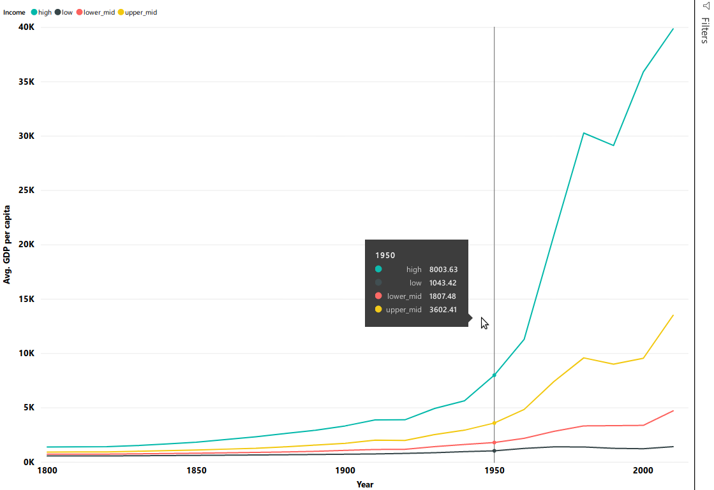

1 Plotting
1.1 Import data set
Load the gap_minder_map.csv file in PowerBI desktop
Click on “Get Data” dropdown icon, and go to Text/CSV option; a dialog box will appear.

–picture–
–picture–
Locate your file and click “Open”.
–picture–
Another dialog box will appear where you can see the contents of your file. Click on Load icon to “Load” the file in your Power BI Desktop.
–picture–
–picture–
–picture–
–picture–
Once you have loaded the file, you will not see the contents automatically. You need to click on “Edit Query” icon under the Home tab in the taskbar to visualize the contents of your file. This will open a new window that looks like an Excel sheet.
–TODO Replace image with gapminder data. Numerical data has ∑ symbol.
1.2 Visualizations Panel
We touched upon the basics of the Visualization panel in Chapter-1; now we will look at this in detail. Inside the Visualization panel are the various types of plots that you can use to visualize your data. The available options are- Stacked bar chart, Line chart, Area chart, Scatter chart, Pie chart, etc. You can also import a custom visual from a file or the market-place if you click on … icon. We will explore that in the later section.
TODO: Insert an image for Visualization Panel.
1.2.1 Scatter chart
The first plot we are going to plot is a scatter plot. The first step to plot any kind of plot in Power BI is to select the plot template/type from the visualization panel. Click on the scatter chart icon in the visualization panel and drag the axis values to the respective value field as shown in the below figure.

After doing the above steps, it will generate a nice scatter plot like this:
 The final interface will look like this:
The final interface will look like this:

Isn’t this simple to plot scatter plot in the Power BI? In general, this will be the procedure to plot any type of plot in the Power BI: Select the type of plot in the visualization section, drag data for the axis values. That’s it.
–picture– –picture–
A simple scatter plot of life_exp vs year does not yield any significant information per se. The only deduction that we can make is that life expectancy shows an increasing trend over time in years.
x-Axis: year y-Axis: life_exp. Right-click on drop-down button and tick “Don’t summarize” option. Legend: By name
‘PowerBI automatically summarizes the numerical data. Always be careful with that.’
Let’s try other options.
Drag and drop region in the legend box, we can see region-wise trends of life_exp over time in years.
x-Axis: year y-Axis: life_exp. Right-click on drop-down button and tick “Don’t summarize” option. Legend: By region
–picture–
Optional activity: In the same chart, try the following: Size: By population
Challenge 1: Keep the summarize option ON. Create a chart with the following options: x-Axis: year y-Axis: life_exp Legend: By region Explain the chart.
Click on the dropdown menu and select “Average” and explain the difference.
Solution1: Computes the sum of life_Exp in all countries in a given region, and plots it. Computes the average of life_Exp in all countries in a given region, and plots it.
–picture– 
1.2.2 Line Chart
Line chart Axis: Year Values: Life_exp Legend: By name
Axis: Year Values: Average of Life_exp Legend: By region
–picture–
–picture–
–picture–
1.2.3 Bar Plots
Axis: Year Values: Average of Life_exp Legend: By region
–picture–

1.2.4 Trends in scatter plot
–picture–

1.3 Plot modifications
Filter data Beautify plots: Font- Segoe(Bold) Font size: 12 Font color: Black Slicer: By year By country (challenge)
Challenge 3: A: Create a scatter-plot of this with: gdp_percap as x. life_exp as y. population as the size. region as the label.
–picture–
B: Filter the data for year-2010 only.
C: Use the slicer to visualize data for different countries For all countries
–picture–
For Bangladesh
–picture–
For Bangladesh and Brazil
–picture–
–picture–
1.4 Explore Marketplace for other plot types
Till now, we have seen several different kinds of plots. Power BI comes with these default plots. There are other different kinds of plots are available in the marketplace. To import new plot template from the marketplace, click on the icon “(…)”, i.e. three horizontal dots in the visualization panel then click on the import from the marketplace.

Once you click on Import from marketplace, It will pop a new window, where you can search for various types of templates. For example, we are looking for the Word Cloud template. Type Word Cloud in the search box, once you find the template click on the “Add icon” then it will added to the visualization panel.

Challenge 4: Create a WordCloud for countries by GDP per capita.
WordCloud Category: name Values: GDP per capita Filter: 2010 year OR Use a slicer with years

1.4.1 Map chart- Lat and Long values
Size: Population Colour: Income level